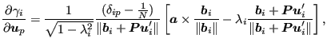

Keyword type: model definition, material
This option is used to define the thermal expansion coefficients of a material. They are interpreted as total expansion coefficients with respect to a reference temperature  , i.e. the thermal strain
, i.e. the thermal strain  of a material at a final temperature T and with initial temperature
of a material at a final temperature T and with initial temperature  is determined by
is determined by
| (704) |
where  is the thermal coefficient at a temperature T. There are two optional parameters TYPE and ZERO. Default for TYPE is TYPE=ISO, other values are TYPE=ORTHO for orthotropic materials and TYPE=ANISO for anisotropic materials. All constants may be temperature dependent. The parameter ZERO is used to determine the reference temperature, default is 0.
is the thermal coefficient at a temperature T. There are two optional parameters TYPE and ZERO. Default for TYPE is TYPE=ISO, other values are TYPE=ORTHO for orthotropic materials and TYPE=ANISO for anisotropic materials. All constants may be temperature dependent. The parameter ZERO is used to determine the reference temperature, default is 0.
First line:
Following line for TYPE=ISO:
Following line for TYPE=ORTHO:
Following line for TYPE=ANISO:
Example: *EXPANSION,ZERO=273. 12.E-6,373. 20.E-6,573.
tells you that the thermal strain in a body made of this material is  if heated from T=273 to T=373, and  if heated from T=273 to T=573.
if heated from T=273 to T=573.
Example files: beamt, beamt2.